MY PORTFOLIO
PERSONAL SUMMARY
As a highly motivated and driven I.T student. I am open to expand my knowledge
skills and experience to apply in every different aspect of job opportunities despite of having
no prior experience, I am confident to adapt quickly to new challenges and learn on the job
As a hardworking individual who is willing to be trained and grow within any company
EDUCATION
-
Bachelor of science in Information Technology
Bestlink College of the Philippines | 2022 - present (Academic Exellence)
- Humanities and Social Sciences
College of St.Catherine Quezon City | 2020-2022, (with honors)
- Talipapa Highschool | 2017-2020, (With honors)
FWPD cerficate
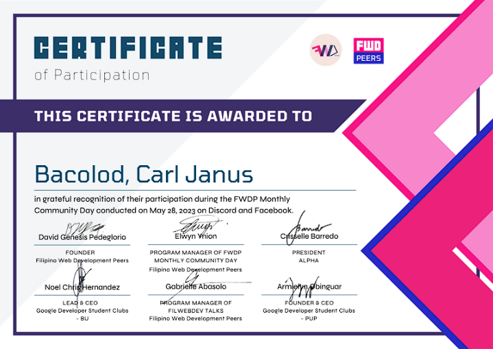
Intro to Photo Editing
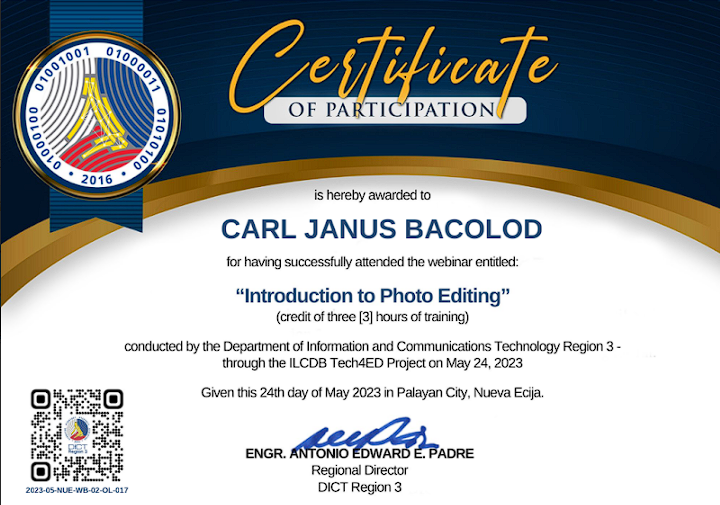
RDTC cerficate
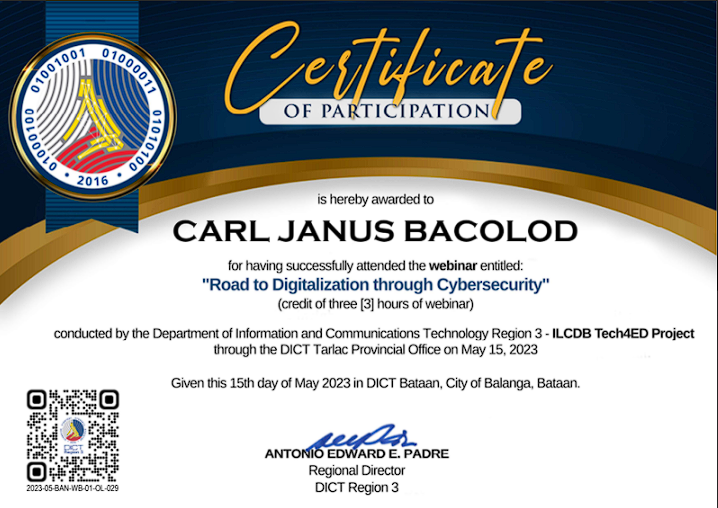
Intro to Artificial Intelligence cerficate
SHS WITH HONORS
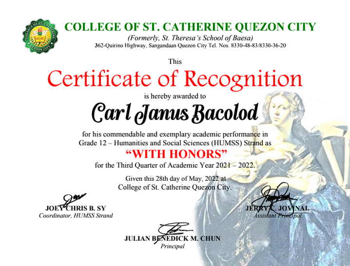
“Cloud Armor: Protecting Your
Data in the Digital Skies”
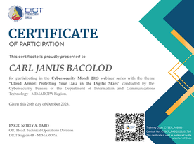
“Cybercrime: Effective Reputation
Management
Techniques”
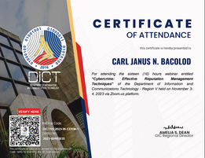
Securing Offices from Digital
Threats and Computer Attacks
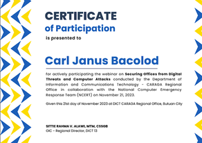
CYBERSECURITY
COMPETENCY FRAMEWORK
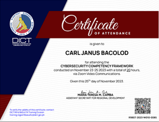
CYBERSECURITY AWARENESS
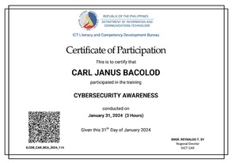
Navigating the Digital Frontier
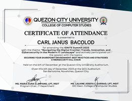
MO-200
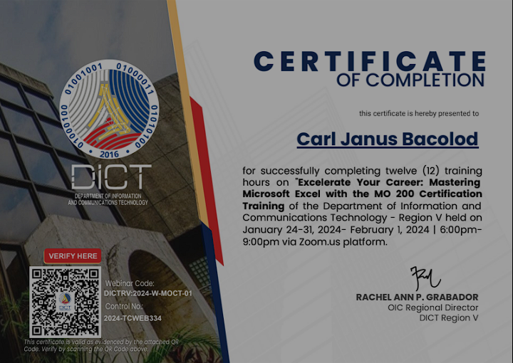